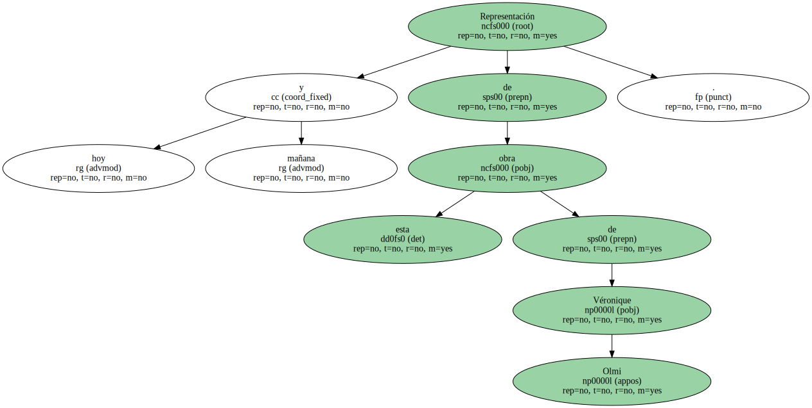
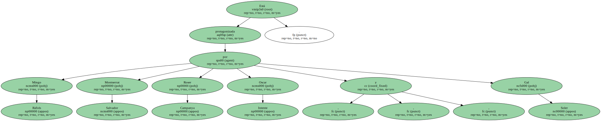

La formación integrada por Manuel Porta ( violín ) , Amparo Lacruz ( violonchelo ) y Emili Brugalla ( piano ) interpreta obras de Turina , Brotons y Chaikovski.

Representación hoy y mañana de esta obra de Véronique Olmi.
Está protagonizada por Mingo Ràfols , Montserrat Salvador , Roser Campanya , Oscar Intente y Gal Soler.
